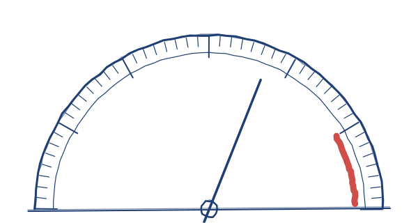

Build your own suit.
Jarvis is bare metal.
Strip it, swap it, make it yours.

d h m
till it goes online · mon 19 oct, 9 pm IST
JARVIS · SUIT ASSY
SHEET 1 OF 8 REV. b1
DRAWN: y.m. 17·10·26
 ears
transcriber
hands
notes
memory
core
ears
transcriber
hands
notes
memory
core
p. 2
the 45-second version
made frame by frame. no stock footage.
or flip it yourself 


scroll = flip
p. 3
how far along it is
updates itself every hour
build waves
of 10 done.
tests green
/88final hand checks